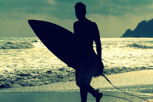
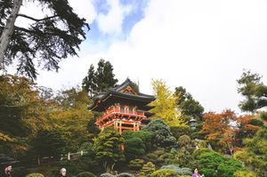
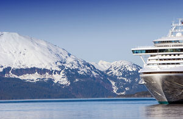
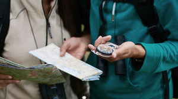

5 причин начать путешествовать прямо сейчас
Все больше и больше людей начинают любить путешествия и отправляются в самые неожиданные места нашей планеты, но по-прежнему есть и те, кто боится или не решается это сделать. Мы хотим вдохновить вас и сказать - путешествовать не страшно, и есть как минимум 5 причин начать путешествовать прямо сейчас.
1. В путешествии вы получите больше впечатлений, чем где бы то ни было

Всем известно, что лучший отдых - это смена обстановки, ведь количество новых положительных эмоций напрямую влияет на ваше самочувствие.
2. В путешествии вы расширите свой кругозор

Всем нам хочется быть эрудированными и интересными людьми, но одно только чтение книг не сделает вас таковыми на 100 процентов. Путешествуя по миру, вы можете познакомиться с самыми разными культурами нашей планеты, необычными традициями, воочию полюбоваться на многие легендарные исторические места. Приезжая в новую страну, хотите вы этого или нет, вы узнаете местный язык, особенности этикета, уникальные блюда, которые любят готовить местные жители, и многое другое. Уверяем вас, лучше один раз увидеть, чем сто раз услышать.
3. Путешествовать - это не так дорого, как кажется
Мы знаем, что многих людей останавливает дороговизна путешествий, но уверяем вас, что путешествовать можно и за сравнительно небольшие деньги, главное делать это с умом. Отслеживайте специальные предложения авиакомпаний, начинайте планировать поездку заранее, используйте такое явление, как couch-surfing - все это позволит путешествовать в соответствии с вашим бюджетом и при этом получать удовольствие.
4. В путешествии вы сделаете уникальные фотографии

В XXI веке значение социальных сетей возросло настолько, что не выкладывать красивые фотографии становится просто стыдно. Только представьте, как украсят ваш профиль фотографии, сделанные в самых неожиданных уголках нашей планеты! Побывайте в интересном музее, на захватывающем дух водопаде или просто на пляже, как из рекламы Баунти.
5. После путешествия вы уже никогда не будете прежними

Каждый раз, отправляясь в путешествие в незнакомое место, вы преодолеваете себя и растете над собой. Путешествия научат вас бороться со страхами, психологическими барьерами и справляться с неожиданными ситуациями.
Путешествия - это жизнь, будьте путешественниками и наслаждайтесь новыми открытиями!